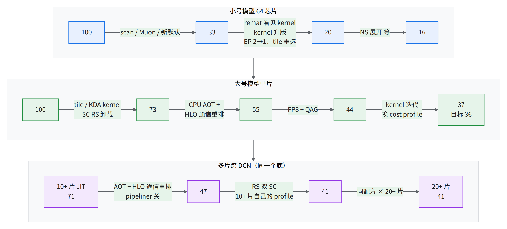
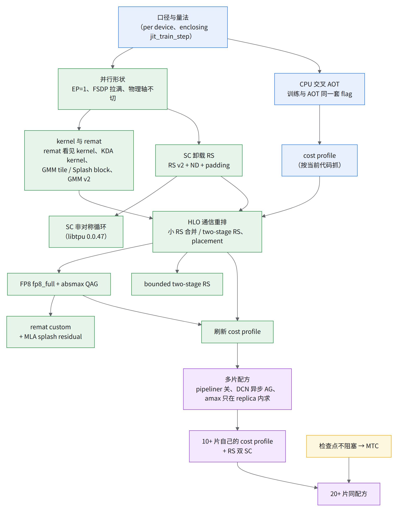
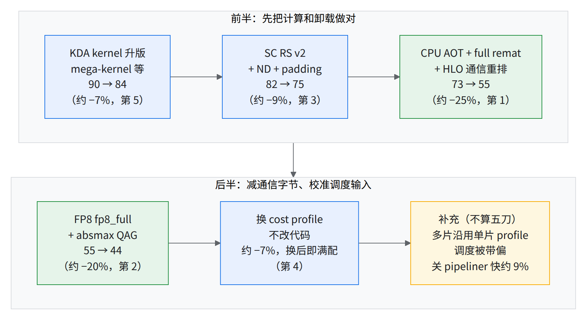
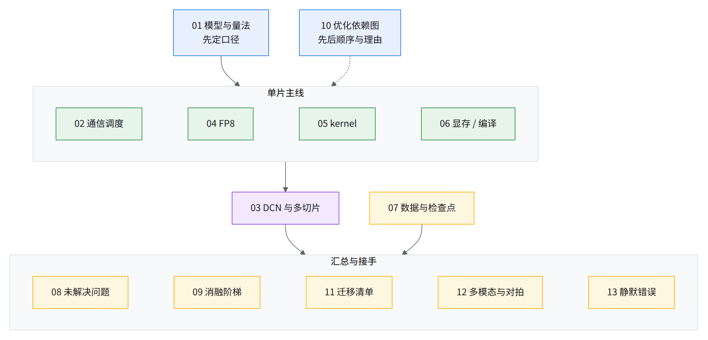

一个 MoE 模型在 TPU v7x 上的训练优化
一套 MLA + KDA 混合注意力 + MoE 的模型（小号 / 大号两个尺寸），在 MaxText 上从单 slice 调到 数千颗芯片跨 DCN。这本书只讲每一刀：做什么、依赖谁、值多少、为什么有效。
ℹ️本书主线的三个前提
- EP=1、FSDP 拉满（大号模型 FSDP=512，专家权重按 FSDP 切、用时 all-gather）；序列 8K（8,192）。
- 书里的收益、排序、开关取舍大多是在这三个前提下测的；换场景（EP>1、序列变短、MLA 头配置不同、只用上游 MaxText）先看 11 · 换场景时哪些结论会翻。
给 GPU 背景读者的 TPU 速成
- 芯片与 device：一颗 v7x 芯片有两个 TensorCore，JAX 把每个当成一个 device，所以 1 芯片 = 2 device。本书的 TFLOP/s、tokens/s、MFU 都按 device 算，MFU 分母 1153.5 TFLOP/s/device = 每芯片 BF16 峰值 2307 ÷ 2。
- TensorCore（TC）/ SparseCore（SC）：TC 跑矩阵乘和绝大部分计算。每芯片另有 4 颗 SparseCore（每 device 2 颗，TPU7x），原本做稀疏 gather / scatter；本书把集合通信卸到 SC 上跑，不占 TC（类比：一颗带归约能力的 DMA 引擎，接近 NVLS / SHARP 那种在网络侧做归约、不占 SM；不是同一种硬件）。
- 车道：书里把「一颗 SC 同一时刻只跑一个通信」叫一条车道。早发的通信占着车道，后面更急的只能排队，所以「发得早」不等于「藏住了」（02）。GPU 上相当于同一个 process group 的 collective 共用一条 NCCL stream、按发起顺序执行。
- 两层网：一片（slice，4x8x8 = 256 芯片）内芯片之间是 ICI 直连，带宽高，作用类似 NVLink 域但大得多；片与片之间走数据中心网络 DCN，慢得多，而且每发起一次都有固定开销（单次 all-reduce 约 21 ms 地板，03）。cube = 4x4x4 = 64 芯片，是片内的物理分块，一片 4 个。
- 通信排在哪是编译期定的：PyTorch eager 下 NCCL 在运行时按 stream 排队；TPU 上 XLA 编译时就把每个 all-gather / reduce-scatter 的开始和结束钉死。本书一大半优化（HLO 通信重排、cost profile、pipeliner）改的都是这个排序。HLO 通信重排是一组私有的 XLA HLO pass，未开源，改的是集合通信的切法、落点和调度顺序；本书只讲理念和判据，实现需读者自行开发（02，图 AG 开始晚 vs 提前做完）。
- 暴露 vs 执行：通信在 SC 上传多久（执行）和 TC 因它干等多久（暴露）是两个数，只有暴露那部分拖慢步时（图、01 §3）。
- JIT / AOT：JIT 在 TPU 主机上现编现跑；AOT 在 CPU 机器上提前把整步编好存成 pickle，TPU 直接加载。生产数都是 AOT（06）。
- 存储：每 device 一块 HBM（显存，可用上限 94.74 GiB，06）；手写 kernel 用的片上暂存叫 VMEM（类比 GPU 的 shared memory，但容量和作用域都不同），kernel 一次搬进 VMEM 的块叫 tile。


步时指数：全书三个底
步时一律写成指数（整数），不写秒。大号、小号模型各一个底；多模态版另有一个底，只在 12 章用：
| 模型 | 指数 = 100 是哪一步 | 读法 |
|---|---|---|
| 大号模型 | 单片（256 芯片，512 device）BF16、JIT、无 HLO 通信重排的最初基线 | 指数 37 ＝ 一步只要最初的 37% |
| 小号模型 | 64 芯片（4x4x4）开发期起点 | 指数 16 ＝ 一步只要起点的 16% |
| 多模态版（只在 12 和引用处） | 多模态版单片 BF16、JIT、未优化基线（中位） | 别章引用时注「多模态底」，不和上两行混比 |
- 多片的指数沿用大号模型同一个底，能放进同一张表；但算弱扩展要同代码、同口径：同代配置 1 → 10+ 片 83–87%（03）。单片 37（pipeliner 开、单片满配）和 10+ 片 41（pipeliner 关、换过 profile）口径不同，不能直接相除。
- 只在单个 A/B 里出现的数（JIT 消融、微基准、2 片对比、另一个配置）只给百分比，不给指数。
- 百分比按档取整：≥10% 取到 5 的倍数，3–10% 取整数，2–3% 写「2–3%」或「约 2%」，1–2% 写「1–2%」，<1% 写「不到 1%」；弱扩展等效率比值保留整数 %。
- 百分比按原始步时算，指数是逐个取整的，拿两个指数相除可能和正文百分比差一档。
一段话讲完整条路
小号模型 64 芯片起步时算力大半闲着。瓶颈不是算力，是通信排错地方、kernel 被重算四遍、tile 选错。大号模型上把这三件事按依赖顺序一件件拆掉，单片从 100 走到 37（目标 36），再把同一套配方搬到 10+ 片、20+ 片，指数停在 41。

- 小号模型：先改成 explicit all-gather（专家矩阵乘里自己发专家权重的 all-gather，不让编译器自动插），反向随之变成 reduce-scatter；再让 remat 看见 kernel 内部、把 EP 降到 1、按微基准重选 tile。
- 大号模型单片：XLA 的 latency-hiding scheduler（编译时决定每个通信排在哪）不肯把层循环里的 all-gather 藏到计算底下，于是上了私有的 HLO 通信重排 pass（HLO 是 XLA 的中间表示）。这一刀之后最大的意外杠杆是喂给 pass 的 cost profile（上次运行的 profiler trace，pass 拿它估每个算子多久）：同一份代码换 profile 差 7–20%。单片满配（37）离目标 36 差 2–3%。
- 跨 DCN 的 JIT 基线：没开 HLO 通信重排，步时双峰，弱扩展约 71%（弱扩展：片数和总 batch 同比加时，单片步时 ÷ 多片步时；这里是单片 JIT 51 对 10+ 片 JIT 基线 71，按原始步时相除），目标 90%（03）。把单片那套（AOT + HLO 通信重排）搬上去、关掉 XLA pipeliner、换上 10+ 片自己的 cost profile 后，10+ 片和 20+ 片都停在 41。
feature 依赖图
一条箭头 A → B 读作「B 要等 A 做完才有意义（或才做得出来）」。颜色按所在篇：蓝＝量法与编译，绿＝单片主线，紫＝多片，黄＝稳定性。

为什么是这个顺序，逐条讲在 10 · 优化依赖图。三条最硬的依赖：
- HLO 通信重排离不开 CPU AOT 和 cost profile：pass 本身在 JIT 和 AOT 下都能跑，但要先在 CPU AOT 上试编、核对产物和训练是同一个程序（CI 的 JIT 校验模式还会强制关掉它）；没有按当前代码抓的 profile，pass 就在按过期的表排。
- QAG 离不开 placement：先量化再 all-gather 之后，被搬的是 FP8 权重，placement 得认得它才会把它提前。
- 多片配方离不开单片配方：单片配方先调稳，10+ 片和单片的差距（同口径 1 → 10+ 片 83–87%）才能记在 DCN 头上；单片没调稳就上多片，两边的问题会搅在一起。
总轨迹（指数）
- 16 小号模型 64 芯片开发期终点（起点 100）
- 37 大号模型单片 FP8 最好点（HLO 通信重排那一刀前 73）
- 36 目标（单片口径，BF16 与 FP8 都要）
- 71 10+ 片 JIT 基线（HLO 通信重排关）
- 41 10+ 片生产配方（AOT）；稳态最好也是 41
- 41 20+ 片，弱扩展约 100% [推断，见下表]
- 34 单片最快（RS 双 SC、新 profile、双 SC 通信搜索三样叠加；双 SC 通信搜索验证过、未进生产）；CI nightly 仍单 SC，step 900–999 窗口为 36，已贴近目标
⚠️看数字前记住
- 吞吐和 MFU 都按 device 算（1 芯片 = 2 device，见「TPU 速成」）。
maxtext#NNNN是上游公开 PR；不在上游的改动没有编号。
| 轨道 | 起点 | 最好点 | 变化 |
|---|---|---|---|
| 小号模型 64 芯片（4x4x4），GBS 256，seq 8K，BF16，开发期 | 100 | 16 | 6.1× |
| 小号模型 64 芯片，CI 每日（固定配置，p50） | 18 | 14 | 约 −20% |
| 大号模型单片（4x8x8），GBS 1024，BF16，CI | 100 | 44 | 2.3× |
| 大号模型单片，FP8，CI | 45 | 39 | 约 −15% |
| 大号模型单片，FP8，手动（同一份代码只换 cost profile） | — | 37（换后即满配） | 约 −7% |
| 大号模型 10+ 片（10+ × 4x8x8，DCN DP=N），FP8 | 71（JIT 中位，双峰） | 41（AOT，10+ 片生产配方长跑各段 p50） | 约 −40%；中间那一档 AOT + HLO 通信重排是 47 |
| 大号模型 20+ 片（20+ × 4x8x8，DCN DP=N），FP8 | — | 41（AOT，p50） | 和 10+ 片同；弱扩展约 100% [推断：10+ 片与 20+ 片 p50 之比约 1.00；两份 pickle 代码版本不同，差异未核] |
| 目标（BF16 与 FP8 都要） | — | ≤ 36（单片口径） | — |
三个起点各指什么
大号模型单片的「起点」有三个说法，量的不是同一样东西；三个都是 BF16、单片（512 device）、FSDP=512、EP=1。
| 指数 | 是什么 | 配方 | PDB / GBS | 怎么量 |
|---|---|---|---|---|
| 100 | 最早一条 BF16 CI 基线 | JIT，无 CPU AOT 和 HLO 通信重排；remat custom，只存 context |
2 / 1024，seq 8192 | 50 步 CI，第 3–49 步均值 |
| 75 | 01 §4 分模块表「BF16 base」列 | JIT，HLO 通信重排前；含没含 SC RS v2 未核 | 跟踪口径 2 / 1024；这份 profile 的 batch 未核 | 一次 profile 里 jit_train_step 两 device 均值；与 CI 同口径未核 |
| 73 | HLO 通信重排前的 CI 基线 | 比上一行多开 GMM v2，仍 JIT、无 HLO 通信重排；remat 仍 custom [推断] | 2 / 1024 | 同指数 100 那行 |
- HLO 通信重排那一刀同时换了口径：CI 改成 CPU AOT + full remat + HLO 通信重排，跑 1000 步、仍取第 3–49 步。所以 73 → 55（约 −25%）里混着口径变化，不能全记在 HLO 通信重排头上。
- 10+ 片 JIT 起点也有两个数，指数都约 71：一个是含坏 cube 的 JIT 基线稳态中位，含双峰慢步（本页数字框、弱扩展约 71%）；另一个是排除坏 cube 后的干净 JIT 基线（慢步基本消失，10、03 的「JIT → AOT + HLO 通信重排约 −35%」用它）。换成 AOT + HLO 通信重排后，两个都约快 35%，差在慢步和坏 cube 算不算（03）。
- 算「相对提升」：起点终点要同精度、同编译方式、同统计窗口。100 → 37 中间换了 BF16 → FP8、JIT → AOT，只能当总轨迹看。
每刀收益：最大的五刀
按对大号模型单片的相对降幅排：

读图：「第 N」按各刀的相对降幅排（约 −25%、−20%、−9%、−7%、−7%）；按指数点排则 KDA kernel（6 点）在换 profile（3 点）前，因为起点不同。
每刀为什么有效（一句话，原理展开在链接处）：
- HLO 通信重排：通用调度器只凭估算决定通信提前多少发；pass 拿实测的 cost profile 把大 AG / RS 挪到够长的计算底下（02）。和 PyTorch eager 的区别见「TPU 速成」；JAX / XLA 在 GPU 上同样有这步编译期调度。
- 换 cost profile：调度器只有一张「每个算子多久」的表；表过期，通信窗口就错位，编译不报错（02）。GPU 上相当于 JAX 的 PGLE（拿 profile 校准调度的估时）。
- FP8 + QAG：每元素 2 字节变 1 字节；先量化再收集，要求每块本地算的 scale 等于整张量的 scale，条件不满足就静默退回 BF16 收集（04）。GPU 上相当于 FSDP2 的 float8 all-gather（torchao
enable_fsdp_float8_all_gather；那边先对 amax 做一次 all-reduce，让各分片用同一个 scale）。 - SC RS：RS 卸到 SparseCore（独立搬运线程）后，TensorCore 只管发起和收尾（02）。
- KDA kernel：把多个 kernel 拼成的老路径换成前向、反向各一个 mega-kernel，KDA core 时间约减半；省的应是 kernel 之间往返 HBM 的中间量 [推断]（05）。
- 黄框（多片关 pipeliner）：pipeliner 把本层通信推到下一层去藏，那份数据要多活一层；多片时显存余量被挤掉，成本表里又没有跨片时间（02）。GPU 上相当于 FSDP 把本层梯度 reduce-scatter 放到独立 stream、与下一层反向重叠（类比）。
这几刀只有上游 MaxText 时拿不拿得到（「骨架拿回几成」都没人测过）：
| 刀 | 要自己实现什么 | 最小骨架在哪 | 上游能替代到哪 | 拿不到时少多少 |
|---|---|---|---|---|
| HLO 通信重排（第 1） | 需自研同类 pass：按 cost profile 重摆大 AG / RS 的 start / done，至少 placement | 理念见 02 §7，最小版的约束与验收见 02 §18 | 只有 XLA 自带的 latency-hiding scheduler 和 collective pipeliner | 整套约 30%（单片）；只缺 placement 约 10%；最小版拿回几成未测 |
| 换 cost profile（第 4） | 模型 / kernel / flag / 片数一变就重抓 trace、导成 pass 吃的格式 | 02 §8、11 A03；导出脚本没公开 | 依附上一行的 pass，单独没有替代 | 同代码不重抓约 7% 拿不到；过期 profile 反而慢约 20% |
| FP8 + QAG（第 2） | 先 absmax 量化成 FP8 再 all-gather，并让 placement 认 FP8 权重 | 11 A09 | fp8_full 配方在上游；上游的先量化再 gather 要求 fixed 标定，而固定 scale 在长跑里出过尖刺（04），这条路没人测过 |
阶梯里 QAG 一级约 35%、knockout 单关约 25%；不带 QAG 的 FP8 反而慢（09） |
| SC RS v2 + ND + padding（第 3） | 不用写代码，三个 libtpu flag | 11 A06 | 上游直接可用 | — |
| KDA kernel 升版（第 5） | 只有模型里有 KDA 才相关；kernel 不在上游 | 11 C01、05 | 上游没有 | 未测 |
feature 总表（按依赖排序）
收益写清在什么配置上量的。「阶梯」＝从满配逐级累积拆，一刀的值依赖前面拆了什么；「knockout 单关」＝在 knockout 基线上只关这一项。满配＝单片生产配置原样（AOT、pipeliner 开，指数 37）；knockout 基线＝满配再关 XLA pipeliner（指数 45）。两种值不同，见 09。
① 量法与编译（一切优化的前置）
| feature | 前置 | 收益（配置） | 详讲 |
|---|---|---|---|
口径：per device、BF16 等价 FLOPs、enclosing jit_train_step 为真值、分母 1153.5 |
— | 不提速；不定口径时 MFU 能差约 12%、TFLOP/s 虚高 4–6 倍 | 01 §3 |
| profiler 不丢 device trace | — | 不提速；修前 profile 里没有 TPU / SC 事件 | 10、13 |
| CPU 交叉 AOT；AOT 与训练加载同一套 XLA flags / libtpu 参数 | — | 不直接提速；是 HLO 通信重排和多片的前提 | 06、11 A01 |
② 并行形状（小号模型上定，大号模型沿用）
| feature | 前置 | 收益（配置） | 详讲 |
|---|---|---|---|
前缀层改四个 nn.scan；Muon scan 重构 + NS dtype / 分片修复；PDB=2 / GA=1、gate/up 融合开关等新默认 |
— | 小号模型 100 → 85 → 43 → 33（这几项改动绑在一起，单项未拆） | 06 |
| EP 2 → 1、FSDP 64 → 128（大号模型 FSDP=512）；物理轴尽量不切 | — | 小号模型 EP 一项约 −8%；同策略换节点池拓扑差 50% 以上 | 01 §2 |
③ kernel 与 remat（让计算本身先做对）
| feature | 前置 | 收益（配置） | 详讲 |
|---|---|---|---|
remat 只存 context + kda_residuals；KDA custom_vjp 前向不在反向重跑 |
— | 小号模型 31 → 28（约 −10%）；单 kda_residuals=device 约 7% [推断：按该阶段步时折算]。和下一行是同一阶段的改动，各自对自己的基线测，不是先后叠加 |
05 |
KDA kernel 库升到 f_fwd 内自带 kda_residuals 标签的版本 |
— | 小号模型 31 → 26（约 −15%） | 05 |
| 微基准选 GMM tile + Splash block；KDA kernel 库再升一版 + MoE 路由索引 remat 键；（同一刀里含上面的 EP 2 → 1） | EP=1 | 小号模型 25 → 20（约 −20%） | 05 |
| Muon NS 展开开关 + VMEM 48 MiB | — | 小号模型约 −4%，开发期终点 16；VMEM 48 MiB 在 256K 长上下文上触发 core halt，生产配置里没有 | 06 |
| 大号模型 GMM tile 扫描（EP=1 下重扫 tile_m） | EP=1 | 大号模型 99 → 91（约 −8%） | 05 |
| KDA kernel 库升到带 fused 反向 mega-kernel 和 CostEstimate 的版本 | — | 大号模型 90 → 84（约 −7%）；小号模型 CI 约 −6% | 05 |
Splash 块参数按序列长度 / head_dim / CP 重扫（外块 2048、fwd 1024、bwd 512，Q/K SEQ_MINOR） |
— | kernel 微基准 fwd+bwd 约 −50%；阶梯第 12 级约 3% | 05、11 A12 |
| 两个模型默认 Tokamax GMM v2 | — | 小号模型 CI 约 −4%；knockout 单关约 9% | 05 |
| KDA 局部算子融进 Pallas kernel | KDA kernel | 小号模型 CI 约 −4% | 05 |
④ SC 卸载与调度 pass（最大的一刀在这层）
| feature | 前置 | 收益（配置） | 详讲 |
|---|---|---|---|
| SparseCore RS v2 + ND + padding | 对应 libtpu | 大号模型 82 → 75（约 −9%）；knockout 单关约 20%、阶梯约 4% | 02、11 A06 |
| 私有 HLO 通信重排 pass（小 RS 合并、two-stage RS、placement pass），CI 同时改 CPU AOT + full remat | CPU AOT；cost profile | 大号模型 BF16 73 → 55（约 −25%）；profile 上 MoE 省约 21 个指数点，其中 RS 约 11、AG 约 8 | 02 |
SC 非对称集合通信循环（libtpu 0.0.47 + --xla_tpu_collective_asymmetric_loop=true） |
libtpu 0.0.47 | 条件不同数也不同：微基准单个 RS 快约 25%；placement 关时整步约 −10%；拿它替换 two-stage 时反而略慢（叠在 two-stage 上才赚）；2 片 JIT 约 −7%。以单片 AOT、placement 开、叠在 two-stage 上为准：knockout 单关慢约 10%，阶梯约 10% | 02、09 |
| bounded two-stage RS + KDA kernel 库新版；libtpu 钉 0.0.48 | HLO 通信重排 | 小号模型 CI 约 −5%；大号模型 FP8 单片 AOT 到 39 | 02 |
| placement 后继循环局部展开（尾部 RS 与后继计算重叠） | 反向 while 优化 | 大号模型不到 1% | 02、10 |
⑤ FP8 与调度输入
| feature | 前置 | 收益（配置） | 详讲 |
|---|---|---|---|
| placement 认 FP8 权重，先量化再 all-gather（absmax QAG） | HLO 通信重排；shard_exp_on_fsdp |
JIT 消融约 −15%；阶梯约 35%、knockout 单关约 25% | 04、11 A09 |
大号模型 FP8（Qwix fp8_full，末 2 层 BF16） |
absmax QAG | BF16 AOT 55 → FP8 44（约 −20%，FP8 数取自单次 profile）；CI 54 vs 45 | 04 |
Muon 批量 NS（shard_map） |
— | 小号模型 CI 1–2%；JIT 消融 HBM 降约 10%；knockout 单关 3% | 06 |
打开 MLA Splash 残差放置开关，只把 MLA Splash 输出和 LSE 存 device；大号模型 FP8 默认 remat full → custom |
FP8 | 不到 1%；阶梯退回 full 慢约 2%、temp 明显降 | 05、06 |
| 刷新大号模型 BF16 默认 cost profile | AOT + HLO 通信重排 | BF16 快约 20%（单次 A/B） | 02 |
| 大号模型 FP8 默认换新 cost profile | AOT + HLO 通信重排 | 约 −7%（单次 A/B）；过期 profile 反而慢约 20% | 02 |
| fused MoE 训练集成：一处梯度修复前对齐过（修后未重验），没进生产 | — | 未量化；生产配置里 MoE 走非融合 GMM | 05 |
⑥ 多片
| feature | 前置 | 收益（配置） | 详讲 |
|---|---|---|---|
DCN 上异步 all-gather 代替 all-reduce（prefer_async_allgather_to_allreduce） |
多片 | 小号模型 2 片约 −20%，1 → 2 片效率约 80% [推断] | 03、11 B02 |
XLA collective pipeliner ＋ all_gather_decomposer：多片关（跨 DCN DP 要关才过 AOT），单片 FP8 保持开 |
— | 单片 FP8 关掉这组开关 nightly 慢约 15%，所以单片开、多片关 | 04 §6 |
| FP8 amax 只在 replica 内求 MAX | FP8 + 多片 | DCN 上的 amax all-reduce 全部消掉（DP=2 AOT） | 04、11 B03 |
| DCN 合并：libtpu combiner 设 0，合并交给 MaxText 侧的私有的 DCN all-reduce 合并 pass | 多片 | 2 片 JIT 单独 A/B：combiner 1 GiB 快约 10%、HBM 多几 GiB；只关 all_gather_decomposer 装不下（各 1 样本） |
03、11 B02 |
| HLO 通信重排加跨迭代 DCN 流水 + ICI→DCN 分区调度 | HLO 通信重排；多片 cost profile | 整套是建模估计、收益未兑现；作为参照，裁剪版不开这套时 1 片 → 5 片已只慢 2–3%（实测基线） | 03 |
| 多片关 XLA pipeliner | 单片满配 + 新 cost profile | 2 片、8 片都快约 9%；2 / 8 片弱扩展约 96% / 约 90% [推断] | 02、11 B01 |
| 10+ 片 AOT 中间档（AOT + HLO 通信重排、pipeliner 关、以 10+ 片 JIT 基线的 trace 作 cost profile） | 上一行 | 71 → 47（约 −35%），无 OOM；独立复现 47、0 慢步、loss 逐位一致 | 03 |
| RS 用每 device 两颗 SparseCore | SC RS | 单次 RS 快约 15%；单片最快到 34，但同时叠了新 profile 和双 SC 通信搜索（未进生产），不是单刀 | 03 |
| 换上 10+ 片自己的 cost profile | 多片 cost profile | 46 → 41（约 −10%；46 用比 10+ 片小的另一个多片配置的 profile）；省下的几乎全是 TC 等 RS（降到约三分之一），RS 本身没变快，是被藏到计算底下了 | 03 |
| 20+ 片同配方，只改片数和 dcn_dp | 10+ 片 AOT 配方；20+ 片新编 pickle | 41，与 10+ 片持平 | 03、08 |
⑦ 稳定性（不提速，但决定 goodput）
| feature | 前置 | 收益（配置） | 详讲 |
|---|---|---|---|
| 检查点保存不再等最慢 host 建存储目录 | — | 小号模型千芯片级生产上存档那步比平时慢一个数量级；128 芯片复现约 100 s → 约 12 s | 07 |
| MTC（本地层每 100 步、远端每 200 步） | 检查点不阻塞 | 10+ 片长跑、注入 11 次故障全恢复，步时不变（指数 41）；恢复 11–14 分钟，20+ 片一次 22 分钟 | 07、08 |
复现验证
单片原样复现：HLO 通信重排关 51、开 37，两边各差不到 1%；开 profiler 重跑也一样。loss 50 步 PASS、换节点逐位相同；JIT 1000 步 LM +0.0750% / MTP +0.1462%，过 FP8 门槛 0.1% / 0.2%（04、09）。
倒着拆，一次拆一样（「阶梯」13 级＋13 个单项 knockout，09）：从 37 逐级拆，第 12 级退到 75（约 2.0 倍），第 13 级编不过。最值钱四刀：QAG、pipeliner × HLO 通信重排、SC 非对称 RS 循环、placement（按 cost profile 安放通信的 pass）；two-stage RS 与小 RS 合并的收益正负随别的开关变。
10+ 片 AOT 中间档：10+ 片 AOT + HLO 通信重排、pipeliner 关、以 10+ 片 JIT 基线的 trace 作 cost profile，指数 47。
- 同一份 pickle 换 cube 独立复现到 47；按编译配置清单从源码再编一份，逐字节相同。新编 pickle 的复现未完成。
- 10+ 片生产配方到 41：省下那一截几乎全是 TC 等 RS（降到约三分之一），算力不变。两步：RS 改用每 device 两颗 SparseCore（单次 RS 快约 15%）；代码不动，cost profile 从比 10+ 片小的另一个多片配置的换成同配置自己抓的 10+ 片 trace，46 → 41。
- MTC 与 20+ 片（08、07）：10+ 片带 MTC 长跑（16 次重启，其中 11 次人为注入），各段 p50 都是 41，最长一段里慢步占约 3%；20+ 片 p50 41、慢步占约 4%。10+ → 20+ 片弱扩展约 100% [推断：两边 p50 之比约 1.00；两份 pickle 代码版本不同（差异未核），20+ 片仍用 10+ 片 cost profile]。
- 弱扩展 96–97%（10+ 片 AOT 中间档及其独立复现）：单片 pipeliner 关 45 对 10+ 片 47 [推断：两边代码和 cost profile 不同]，多出来那截大头在跨片通信（03）。
- 10+ 片生产配方到 41 后，单片 45 这个对照就过期了（比值超过 100%）。单片另有 nightly 单 SC 36、双 SC 34；同代配置 1 → 10+ 片 83–87% [推断：单片 nightly 单 SC 对 10+ 片约 87%，单片双 SC 实验配置对 10+ 片最好段约 83–84%]，弱扩展以这组同口径比为准（03）。
⚠️还没解决的这组数要 AOT、HLO 通信重排、pipeliner 关三条同时成立；10+ 片以上只有 20+ 片一个点；单片 profile 搬到多片时，关 pipeliner 反而快约 9%；10+ 片自己的 profile 只在 pipeliner 关时用过（02、08）。
搬到别的模型：按 11 · 迁移清单。接手方的主战场是 DCN 这一层：单次 all-reduce 21 ms 发起地板（含 Python 派发，程序内摊约 9.6 ms/个，03）、跑不满网卡的 host-side reduction、共享网络。
文章地图

| 篇 | 一句话问题 | 带走的一句话 |
|---|---|---|
| 01 模型与量法 | 什么模型，时间花在哪、怎么量才不自欺？ | 口径：per device、BF16 等价、enclosing jit_train_step 为真值；步时用指数 |
| 02 集合通信调度与重叠 | FSDP=512 每层搬权重，为什么时机比速度要命？ | kernel 快了 step 不一定快；cost profile 会过期 |
| 03 DCN 与多切片 | 1 片到 10+ 片，近三成效率去哪了？ | JIT 下丢在 DCN（21 ms 发起地板、约 35% 线速）；靠 AOT + HLO 通信重排和 10+ 片自己的 profile 把通信藏起来到 41，带宽没变 |
| 04 FP8 | 稠密乘法（dot_general）只占约 6% 的时间（大号模型、已 FP8、不含专家 GMM），FP8 为什么还能快约 20%？ | FP8 真正省的是通信（QAG），不是算力 |
| 05 KDA / MLA / MoE kernel | custom_vjp kernel 为什么被跑四遍？ | remat 看不见 kernel 内部；fused MoE 一处梯度修复前对齐过（修后未重验），没进生产 |
| 06 显存、remat、编译 | 94.74 GiB 的 HBM 里，理论账为什么和实际峰值差那么多？ | 靠异步重叠藏通信的配置里，HBM 余量就是调度余量；升 libtpu 就重量显存 |
| 07 数据与检查点 | 训练跑顺之后，时间漏在哪？ | 检查点停顿约 100 s → 约 12 s（128 芯片复现）；「exit 0」≠ 成功；恢复演练 9 次里 4 次挂在 TPU 初始化（不是 MTC 的问题）；另一组带 MTC 的注入测试 11 次全部原地恢复 |
| 08 未解决问题 | 接手先做哪几个实验？ | 排序后的 11 个问题 + 大多配了第一个实验 |
| 09 消融阶梯 | 每个优化单独拿掉，整步和 XProf 变了什么？ | 一刀值多少看别的开没开：QAG 阶梯约 35%、knockout 单关约 25%；不带 QAG 的 FP8 反而慢（分项见 04） |
| 10 优化依赖图 | 哪刀先哪刀后、为什么这个顺序？别章没收的改动呢？ | 先修尺子再动刀；最大的几刀都在改「通信什么时候发」，所以都排在调度 pass 之后 |
| 11 迁移清单 | 换集群或模型，几百条优化哪些值得搬、按什么顺序？ | 先搭 CPU AOT 量法，再上 HLO 通信重排 + cost profile 和 FP8 + QAG；C 档有同类结构才做 |
| 12 多模态版与精度对拍 | 加上视觉编码器之后慢在哪？两套框架的数一直对不上怎么办？ | 10+ 片的慢主要在数据读取和冷启动，计算代码零改动；对拍先校尺子：GPU 自己重跑一遍的差异就可能超门槛 |
| 13 静默错误总表 | 哪些问题跑通、不报错、loss 正常，结果却是错的？上线前怎么五分钟查一遍？ | 73 条按症状 → 根因 → 怎么抓排列；先校秤（profiler、FLOPs 计数、计时）再谈快慢；跨框架对拍的八个坑 |
术语与编号速查
「详讲」链到第一次展开的地方。
硬件与网络
| 词 | 一句话 | 详讲 |
|---|---|---|
| chip / device | 一颗 v7x 芯片 = 2 个 TensorCore = 2 个 JAX device；吞吐、MFU 按 device 算 | TPU 速成 |
| TC / SC | 见 TPU 速成；SC 每芯片 4 颗（每 device 2 颗），本书专跑卸载的集合通信（RS / AG / AR） | 01 §3 |
| TC 等 X / SC X | 「TC 等 X」＝ TC 上暴露出来的 X 通信等待；「SC X」＝ SC 上 X 实际在传的时间；只有前者拖慢步时 | 01 §3 |
| ICI / DCN | 片内直连的高带宽网 / 片间走主机网卡的数据中心网，慢且每次发起有固定开销 | 03 |
| cube / slice（片） | cube = 4x4x4 = 64 芯片，集群按 cube 分位置；片 = 4x8x8 = 256 芯片 = 4 个 cube | 01 §2 |
| 子块 / 坏子块 | 子块＝调度给作业的一个 cube；坏子块＝二分慢步时定位到的故障 cube（共 4 个有证据，另 2 个只被调换过、无证据）；「坏 cube」同义 | 03 |
| pod | v7x pod = 144 cube = 9,216 芯片（TPU7x 规格表写 9,216，144 = 9,216 ÷ 64 [推断]）；k8s 的写「k8s pod」或 worker | 03 |
| HBM / VMEM | 每 device 的显存 / 手写 kernel 用的片上暂存（见 TPU 速成） | 06 |
编译与调度
| 词 | 一句话 | 详讲 |
|---|---|---|
| JIT / AOT | 定义见 TPU 速成。生产数都是 AOT；CI 的 JIT 校验模式强制关 HLO 通信重排（pass 本身 JIT 也能跑），JIT 数只当对照 | 06 |
| HLO 通信重排 | 在 XLA 调度前后改集合通信切法、落点和顺序的一组 pass：小 RS 合并、two-stage RS、placement，外加只给下一份 profile 打标签的融合行为标注 | 02 §7 |
| placement | placement pass 简称：按 cost profile 估耗时，决定每个大 AG / RS / AR 从哪发、在哪等 | 02 |
| cost profile | 上次运行的 XProf trace，placement 拿它估各算子耗时；模型、kernel、flag、片数任一变就重抓 | 02 |
| XLA collective pipeliner | XLA 自带 pass，把层循环一圈末尾的通信挪进下一圈与计算重叠；全书写「pipeliner 开 / 关」。不是 HLO 通信重排里的「流水」 | 02 |
| AB 流水 | HLO 通信重排把反向每层拆成 A（本层权重 AG）和 B（算出 RS 输入的计算），第 i 层 B 与第 i+1 层 A 并行 | 02 |
| 车道 | 一颗 SC 同一时刻只跑一个通信，见 TPU 速成 | 02 |
| AGRS | 一段计算两头各一次通信：进门 AG、出门 RS；FSDP、MoE 派发都是 | 02 |
| ND 策略 | SparseCore RS v2 的一种分解方式（use_n_dimension_strategy），形状满足条件才自动启用 |
02 |
| remat（重算） | 反向重算前向中间结果，算力换显存；full 全重算，custom 指定几样存下 |
06 |
| Pallas kernel / tile | Pallas 是 JAX 手写 TPU kernel 的接口；tile 是一次搬进片上的块，选错会慢或编不过 | 05 |
并行、精度与训练
| 词 | 一句话 | 详讲 |
|---|---|---|
| FSDP / EP | FSDP 权重切到所有 device，用时 all-gather、梯度 reduce-scatter；EP 专家分到不同 device，token 走 all-to-all。大号模型 FSDP=512、EP=1 | 01 §2 |
| PDB / GA / GBS | per-device batch（每 device 每微批几条序列）/ 梯度累积步数 / 全局 batch；GBS = PDB × device 数 × GA，如 2 × 512 × 1 = 1,024 | 01 §3 |
| QAG | 专家权重先 absmax 量化成 FP8 再 all-gather，通信减半 | 04 |
| absmax / amax | amax ＝ 张量当前的绝对值最大值；absmax 标定 ＝ 每步按 amax 现算 FP8 的 scale（对照 fixed 固定 scale） |
04 |
| replica | 跨片数据并行里的一份完整模型副本；「amax 只在 replica 内求」＝ 不跨 DCN 求 MAX | 04 |
| Muon / NS | Muon：对二维权重的更新做正交化的优化器；NS ＝ Newton-Schulz 迭代，Muon 用它近似正交化 | 06 |
| MTP | multi-token prediction：主 loss 外再预测后面 token 的辅助头，有自己的 loss（「LM / MTP」两列偏差即这两个 loss） | 06 |
| MTC | 多层检查点（multi-tier checkpointing）：本地 ramdisk 层高频存 + GCS 层低频备份 | 07 |
| RPO | recovery point objective：出故障时最多退回到哪一步、丢多少训练进度 | 07 |
| goodput | 墙钟里真正推进训练的占比：完成步数 × 同配置稳态步时 ÷ 墙钟 | 07 |
| 步时指数 | 大号模型单片 BF16 最初基线 = 100，小号模型开发期起点 = 100；多片沿用大号模型的底；多模态版另有一个底（只在 12 章，引用处注「多模态底」） | 步时指数 |
| 弱扩展效率 | 片数与总 batch 同比加时，单片步时 ÷ 多片步时；要同代码、同口径 | 03 |
| tiny | 几芯片就能跑的调试小配置，只测功能和编译 | — |
实验口径与条目编号
| 词 | 一句话 | 详讲 |
|---|---|---|
| 复现验证（文中也写独立复现） | 照生产配置在自己集群上重跑的几组实测：2 片 JIT 逐刀消融；JIT 对照（单片基线、2 片 DCN 开关 A/B）；单片 AOT 复现满配 + 阶梯 / knockout + 多片 pipeliner 开 / 关；单片真数据 loss 对齐（含 1000 步）；10+ 片独立复现 AOT 中间档那组 | 单片与 2 片见 09；10+ 片见 03 |
| 10+ 片生产配方 | 指数 41（pipeliner 关、RS 双 SC、10+ 片自己的 cost profile）；单片对应的是「满配」（指数 37，见下文「满配 / knockout 基线」行）。不等于下一行的 10+ 片 AOT 中间档 47 | 09、03 |
| 10+ 片 JIT 基线 / 10+ 片 AOT 中间档 | JIT 基线 ＝ JIT、HLO 通信重排关（指数 71）；AOT 中间档 ＝ AOT + HLO 通信重排、pipeliner 关、以 JIT 基线的 trace 作 cost profile（指数 47） | 03 |
| 阶梯 / knockout | 阶梯从满配逐级累积拆，每刀的值依赖顺序（单片 AOT 第 1–13 级，第 11 级在 CPU 上编不了、只有 knockout 数，第 13 级编不过）；knockout 在 knockout 基线上只关一项；另有一组 2 片 JIT 消融：从全部优化都开的 2 片 JIT 配置起，每级再关一项 | 09 |
| 满配 / knockout 基线 | 满配 ＝ 单片生产配置原样（也写作「1 片生产配方」；AOT ＋ HLO 通信重排、pipeliner 开，指数 37），阶梯第 0 级；knockout 基线 ＝ 满配再关 XLA pipeliner（阶梯第 1 级，指数 45），13 个 knockout 都相对它 | 09 |
| A01–C06 | 11 迁移清单条目编号：A 档通用必做、B 档按场景（多片 / 长上下文 / 优化器）、C 档绑模型结构（KDA / MLA）；数字是档内序号 | 11 总览 |